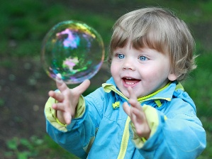
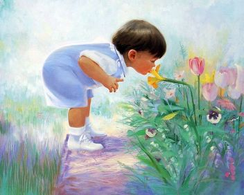

Мир младенца
Как младенец воспринимает внешний мир? Какой он для него: нагромождение разноцветных пятен, пересекающихся линий, нечто неоформленное, бессмысленное или же иное, похожее на знакомый и понятный мир взрослых?
На эти очень сложные вопросы современная наука еще не имеет окончательных ответов. Однако уже накоплено множество фактов, позволяющих хотя бы приблизиться к решению этой загадки и в самых общих чертах представить себе образ мира, каким он видится младенцу. Прежде всего, ученые обратили внимание на то, что никто из взрослых не помнит событий, которые происходили с ними в первый год жизни. Скорее всего, это свидетельствует о том, что восприятие младенцем окружающего мира действительно очень своеобразно и отлично от восприятия взрослого. Предполагалось даже, что ребенок весь первый год жизни как бы погружен в себя, в свои ощущения, порождаемые биологическим функционированием организма. И только факты, полученные в последние десятилетия, опровергли эту точку зрения. Мы уже немного говорили о компетентности младенца, его умении различать окружающие предметы по цвету, форме, сложности.
Открытие ранее неизвестных возможностей малыша позволило выдвинуть новую гипотезу, а именно: сначала ребенок воспринимает отдельные качества предметов, а затем они объединяются, создавая более сложный образ мира. Однако нарастающий поток исследований и новых данных поставил под сомнение и это предположение. В частности, выяснилось, что у человека есть примитивное единство информации, поступающей от различных органов чувств, которое, по-видимому, определяется структурными особенностями нервной системы. Например, зрительная информация одновременно содержит сведения о тактильных свойствах предметов. Иными словами, зрение с самого начала предполагает возможность осязания предмета, его реальное существование в пространстве.
Американские психологи провели уникальные опыты с новорожденными. Малышам надевали специальные очки, поляризующие свет и создающие иллюзию присутствия предмета там, где его на самом деле не было. Предварительно выясняли, что младенец уже может дотрагиваться до предмета – находящегося перед ним маленького шарика – и схватывать его. В этих опытах новорожденные трогали и схватывали предмет без каких-либо признаков недоумения. А в опытах с иллюзорным предметом поведение малышей было совсем другим. Иллюзорный предмет (тот, который ребенок видел, но не мог схватить) всегда вызывал плач, как только ручка малыша достигала его видимого места нахождения, но не находила там реального объекта. Этот поразительный эффект служит доказательством примитивного единства ощущений – хотя тактильная информация отсутствовала, она несомненно ожидалась ребенком. Относительно недавно получены сведения о том, что младенец уже в первые месяцы жизни может находить сходство между явлениями из разных областей восприятия: видением и слышанием, видением и осязанием. Шестимесячным малышам давали соски разной формы: гладкую и шишковатую. Младенец не видел, какую соску ему дают, всю информацию о ней он получал только путем осязания, когда соска находилась у него во рту. Затем пустышку забирали и показывали ребенку обе соски одновременно. И что удивительно, младенец дольше разглядывал ту из них, которую только что сосал.
Судя по приведенному факту, можно предположить, что у малыша, пока он сосал пустышку, сложился ее обобщенный образ, с помощью которого он потом, глядя на две соски, выбрал «свою». Способность младенца к построению обобщенного образа, но уже в сфере видения и слышания, можно проиллюстрировать таким примером. Малышам давали прослушивать отрывистые или протяжные звуки, а потом им показывали изображения коротких и прерывистых, а также протяженных линий. Выяснилось, что те младенцы, которые слышали прерывистые звуки, дольше смотрели на прерывистые линии, а те, что слушали протяжные звуки, больше интересовались непрерывными, протяженными линиями. Столь удивительные возможности ребенка психологи рассматривают как способность к мыслительным операциям типа моделирования. Моделирование – очень рано возникающая способность младенца распознавать в явлениях сходные свойства, обобщая их в схемах. К 2–3 месяцам малыш обычно обнаруживает повышенный интерес к явлениям, которые немного отличаются от известных ему, и уделяет меньше внимания хорошо знакомым или совершенно новым. Уже в этом возрасте младенцы способны сравнить то, что они воспринимают, с накопленным опытом.
Как мы уже говорили, человеческое лицо необычайно рано привлекает ребенка. В первые месяцы жизни у него складывается обобщенная схема лица – овал с двумя кружками (глаза). Четырехмесячный младенец, «составивший» схемы лиц своих родителей, будет долго и пристально смотреть на картинку, изображающую лицо с глазами на месте носа, но он почти не уделит внимания тому изображению, где на лице глаз нет вовсе. Это происходит потому, что незначительные перемены в предмете или явлении для младенца гораздо привлекательнее, чем полная новизна.
Как правило, отличающиеся явления вызывают у младенца внимание, оживление, улыбку – это значит, что ему удалось сравнить свои впечатления с теми образами, что имеются в его памяти. Но иногда отличие нового от уже знакомого может вызвать тревогу или даже огорчение. Например, 3–4-месячный ребенок, у мамы которого светлые волосы и голубые глаза, может улыбнуться похожей на нее светловолосой женщине, но, скорее всего, насторожится и забеспокоится при виде темноглазой и темноволосой.
В повседневной жизни легко наблюдать «мыслительную» работу младенца. Например, мама собирает 3-месячного малыша на прогулку. Готовая коляска с ребенком стоит в коридоре. Ребенок сосет пустышку и смотрит по сторонам. Если в это время в коридоре включить свет и слегка качнуть абажур (при условии, что младенцу хорошо виден источник света), вы заметите, что сосание прекратится, малыш на некоторое время замрет, сосредоточенно глядя на абажур. Через некоторое время сосание возобновится, и ребенок отведет взгляд в сторону. Аналогичные наблюдения за изменением характера сосания вы можете сделать, подбрасывая и ловя в поле зрения малыша яркий воздушный шарик, надевая на голову и снимая пеструю косынку, показывая яркую картинку в разных положениях. Во всех случаях, когда ребенок замирает, сосредоточивается, в его мозгу происходит сложная работа: он сличает слегка изменившийся облик воспринимаемого объекта с имеющимся обобщенным образом. Малыш все время осваивает новые и новые впечатления, формирует новые образы, видоизменяет старые.
Разнообразие окружающих явлений и предметов заставляет ребенка разбираться в них и способствует его познавательному развитию. Следовательно, умственное развитие младенцев, живущих в однообразной среде, может быть несколько замедленно по сравнению с развитием тех детей, кто живет в более разнообразной обстановке и имеет возможность получать больше впечатлений.
По-видимому, построение моделей, обобщенных образов предметов – одна из важнейших характеристик того, как младенец воспринимает окружающий мир. Другая важная характеристика – целостная картина мира, не мозаичное восприятие отдельных свойств и качеств объектов, а изначально целостный образ внешней среды, в котором синтезирована и обобщена разнообразная информация – зрительная, слуховая, осязательная.